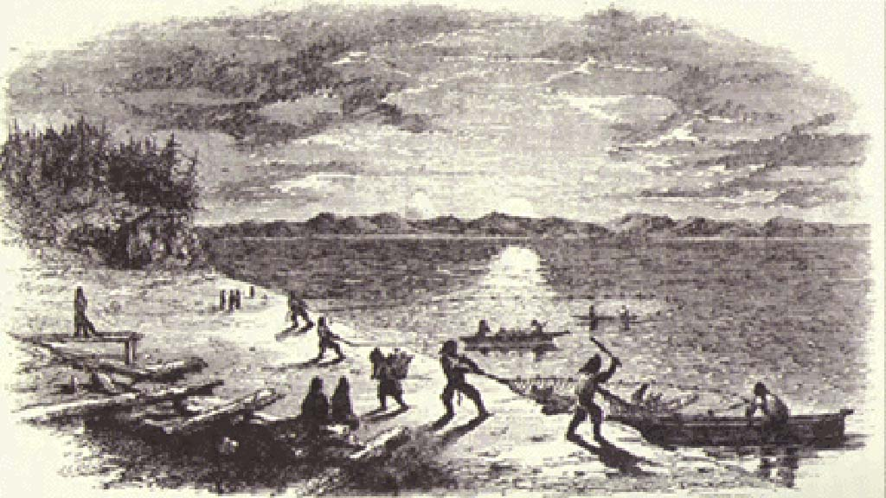
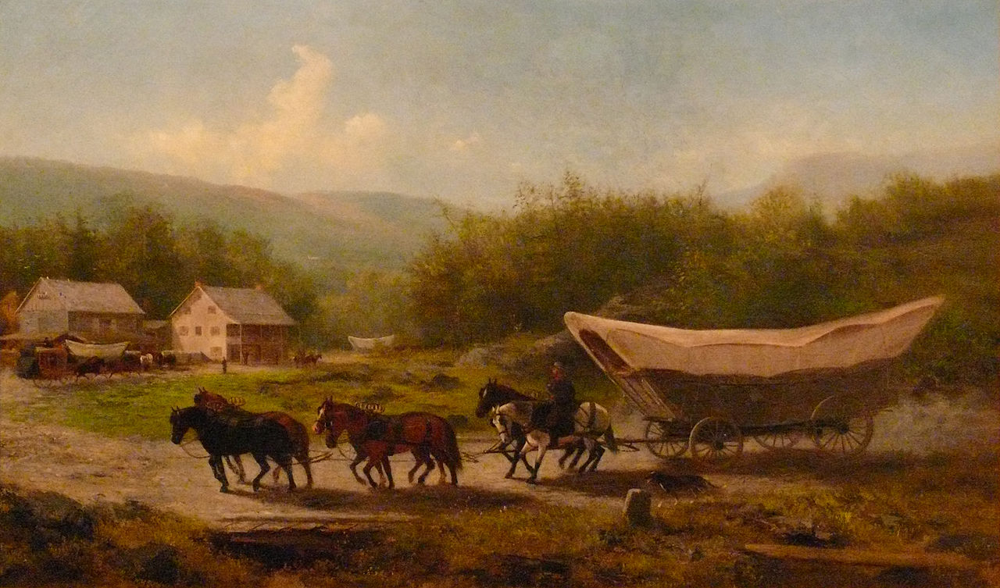
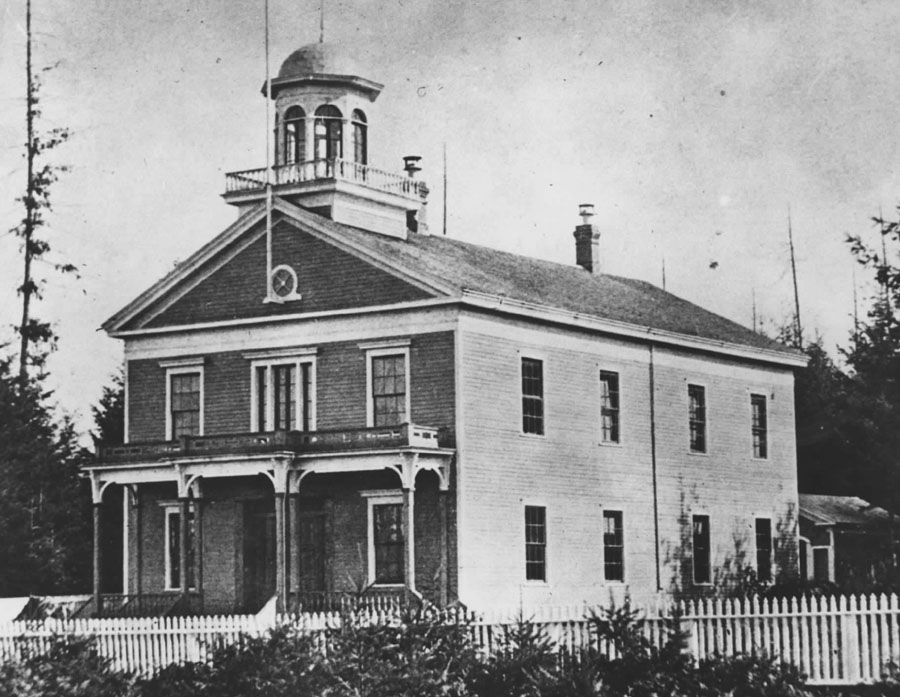

Early History
Washington state has a rich history that dates back to its early Native American inhabitants. These tribes, including the Coast Salish, Chinook, and Yakama, thrived in the region long before European explorers arrived.
Exploration and Settlement
In the late 18th century, European explorers such as Captain James Cook and George Vancouver charted the Pacific Northwest. By the early 19th century, settlers began to arrive via the Oregon Trail, establishing the first American communities.
Statehood
Washington was admitted to the Union as the 42nd state on November 11, 1889. The state experienced rapid growth due to its abundant natural resources, including timber, fisheries, and minerals.
Modern Era

Today, Washington is known for its vibrant economy, driven by industries such as technology, aerospace, and agriculture. The state's largest city, Seattle, has become a global hub for innovation and culture.